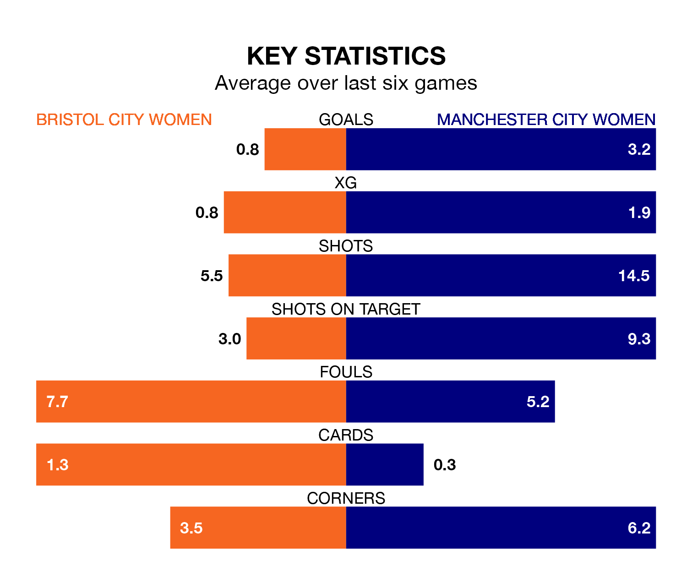

Relegation candidates Bristol City Women face a challenge against high-flying Manchester City Women at Robins High Performance Centre on Sunday.
Bristol City Women are rooted to the bottom of the FA Women's Super League table, and have picked up just one win and three draws in their 19 games to date.
City, meanwhile, are top of the standings with 49 points, having won 16 and drawn one.
Bristol City are in awful form in the FA Women's Super League, with no wins and six losses from their last six games.
With six wins and no losses over that period, Manchester City's form is much better – they have taken 18 points from 18, compared to the Robins' zero.
With 54 goals in 19 games so far this season, City are the league's highest scorers with 2.8 goals per game. And they are conceding fewer than average, letting in 12 goals at a rate of 0.6 per game.
The home side, meanwhile, are below average scorers, with 1.1 goals per game, compared to a league average of 1.7. They have conceded 2.8 goals per game.
In the last 10 years, Bristol City and Manchester City have played each other on 19 occasions. Bristol City won one of them, Manchester City 16, and they drew twice.
On average, the Robins scored 0.5 goals and City 3.7 in those matches.
Their last meeting was on October 15, when Manchester City won 5-0 at home.
Bristol City's last match was on April 20, a 1-0 loss against Liverpool Women.
Manchester City beat West Ham United Women 5-0 last time out, on April 21, with Khadija Monifa Shaw (two), Jessica Park and Leila Ouahabi El Ouahabi on the scoresheet.
Updated: 07:59 (UTC), 26/04/24